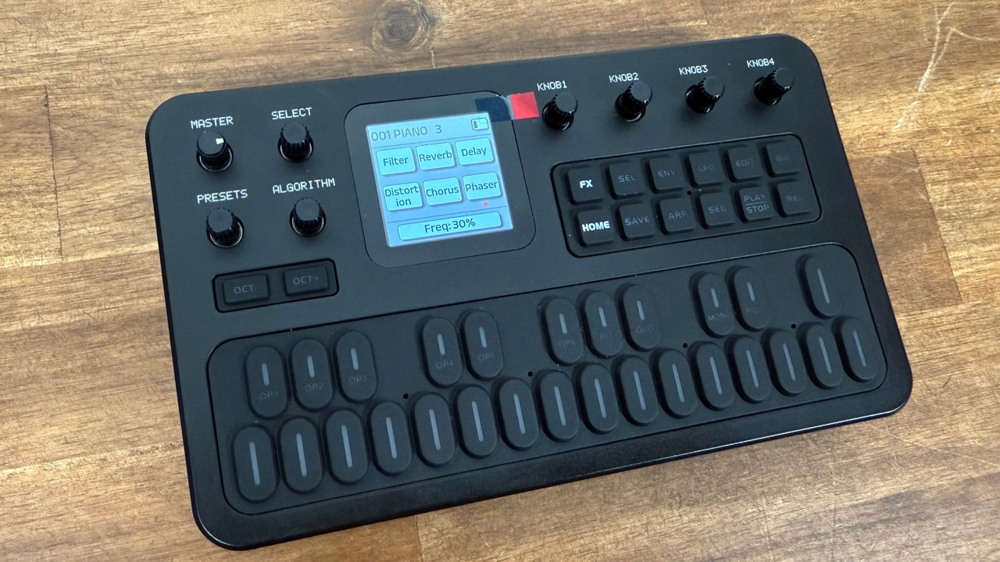

7. Effects chain
Six effects, their order and every knob
The FX page

The FM-1 has six built-in effects connected in a row, a chain. The sound passes through them left to right (slot 1 to slot 6), and you can choose the order.
Press FX. The screen shows a 3 × 2 grid.
- A bright box = effect on; a dim box = off.
- A blinking dot under a box marks the selected effect.
Turn SELECT to move the dot between the six slots.
Turn KNOB 1–4 to edit the selected effect. The footer shows the exact value you are changing (for example
CutOff: 1004Hz).Press FX again to leave.
Turning an effect on and off
KNOB 4 is always the on/off switch of the selected effect: clockwise = on, counter-clockwise = off. The box brightens or dims to confirm.
Changing the order
Order matters: distortion before reverb makes a distorted sound with a reverb tail; reverb before distortion distorts the reverb itself.
On the FX page, turn SELECT to put the dot on the effect you want to move.
Press SEL. The SEL LED lights and the dot stops blinking and stays solid: the effect is “grabbed”.
Turn SELECT. The grabbed effect swaps places with its neighbours.
Press SEL again to drop it in its new place (LED off).
The MIDI control numbers belong to each effect, not to its slot, so reordering the chain never changes which MIDI CC controls which effect (see MIDI).
The six effects, knob by knob
Every effect uses K1–K3 for sound parameters and K4 for on/off. Filter and reverb use K1 to choose a type.
| Effect | K1 | K2 | K3 | K4 |
|---|---|---|---|---|
| Filter | Type: Low Pass / Band Pass / High Pass | CutOff 100 Hz–20 kHz (100 log steps) | Q (resonance) 0–100 | On/Off |
| Reverb | Type: Room / Hall / Plate | Decay 0–100% | Mix 0–100% | On/Off |
| Delay | Decay 0–100% | Rate 0–100% | Mix 0–100% | On/Off |
| Distortion | Gain 0–100% | Tone 0–100% | Level 0–100% | On/Off |
| Chorus | Freq 0–100% | Depth 0–100% | Mix 0–100% | On/Off |
| Phaser | Freq 0–100% | Depth 0–100% | Mix 0–100% | On/Off |
Filter
Removes part of the spectrum. Low Pass cuts highs (dark), High Pass cuts lows (thin), Band Pass keeps a middle band (nasal). Move CutOff to sweep it and raise Q for a pointed resonance at the cut-off.
Reverb
Adds space. Room is small, Hall is large, Plate is bright and metallic. Decay sets how long the tail lasts and Mix how much you hear compared with the dry sound.
Delay
Echoes. Decay here is the number of repeats (feedback), Rate is the time between echoes, Mix the level.
Distortion
Gain is how hard the sound is pushed, Tone brightens or darkens it, Level compensates the volume.
Chorus
A doubled, slightly detuned copy that thickens the sound. Freq is the speed of the wobble, Depth its amount.
Phaser
A sweeping, swooshing comb effect. Freq is the sweep speed, Depth the width.
These effects are simple and mono. Reviewers describe them as usable but low-fi, good for adding colour or space. For polished results many players use external pedals or computer plug-ins with the FM-1’s stereo jack (both channels carry the same mono signal).
- The exact algorithm of each effect (e.g. what “Rate” of the delay means in milliseconds) is not published.
- The manual lists Filter Q as 0–100 on the panel, but the MIDI chart lists 0–10 for the same control. The panel mapping is not documented.
- Delay K1 is labelled Decay in the manual; we describe it as repeats (feedback), which is how MIDI documentation treats it, but M-VAVE does not define it.
Where the effects sit
The signal path is: the six operators → (optional global ADSR if ENV is on) → the six-slot effects chain in your chosen order → MASTER volume → output and speaker. This path is inferred from the manual rather than documented in a diagram, but it matches how the controls behave.
Saving effects
The effect settings and their order are stored with each voice (hold SAVE). So voice 001 can have a long reverb while voice 033 is dry. The value range of the effects was 0–10 on older firmware; from V15 it is 0–100.